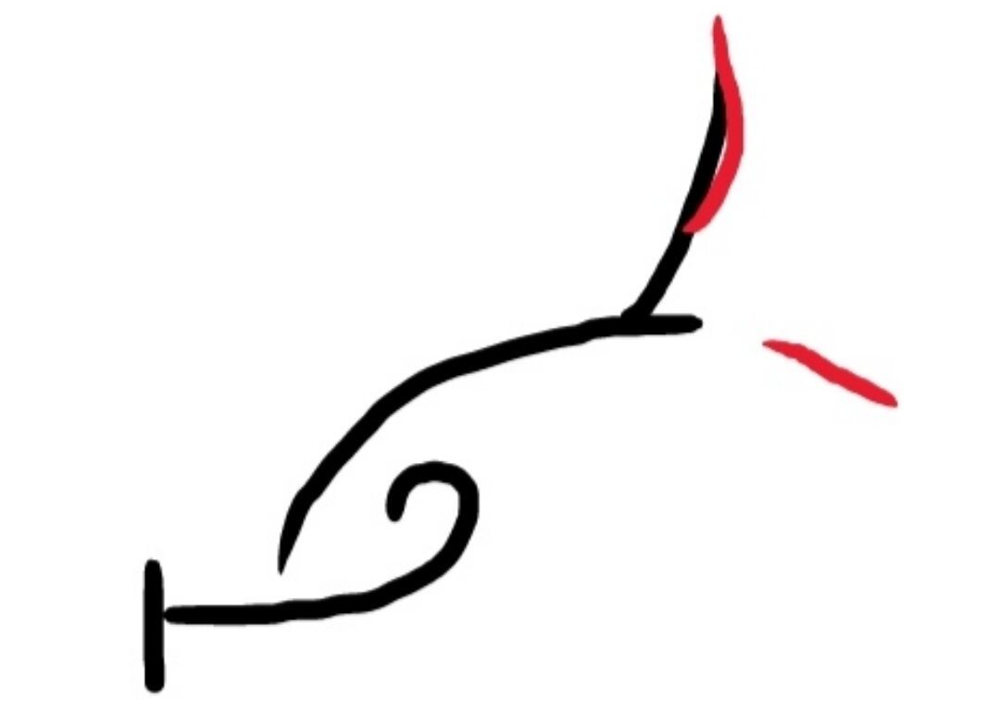
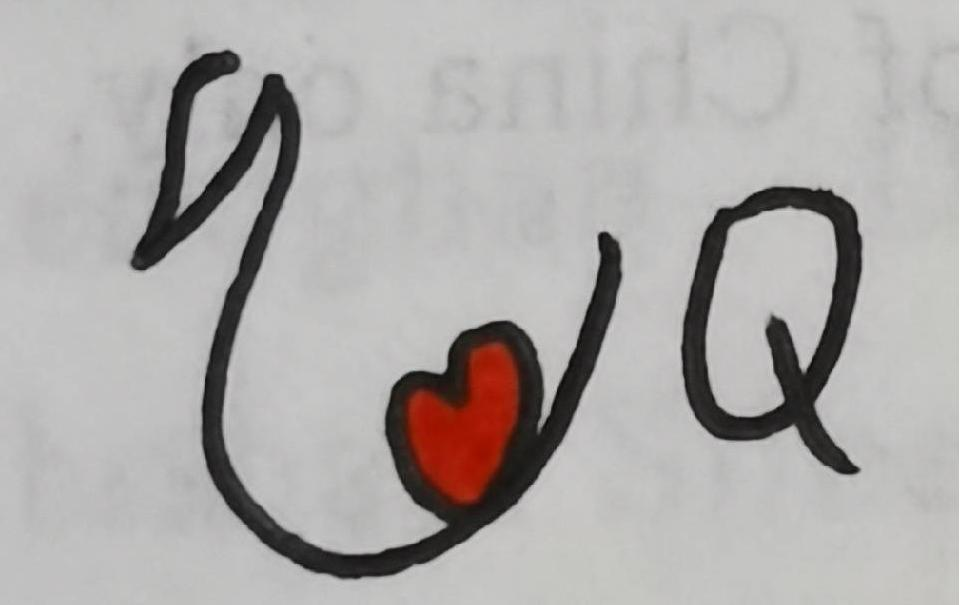

News
19 September 2025
Two full papers are accepted by NeurIPS 2025 on diffusion-based recommender.
5 April 2025
One full paper is accepted by SIGIR 2025 on item embedding fusion.
3 Jan 2025
One full paper is accepted by ICLR'25 on diffusion-based recommender.
|
Guoqing Hu
 Master student
Lab of Data Science 443 Huangshan Road, Hefei, China 230027
Advisor: Prof. Xiang Wang |
I am currently in the 2nd year of my Matser program at USTC Lab for Data Science, supervised by Prof. Xiang Wang and Prof. An Zhang.
My research interests includes diffusion models and generative recommendations, particularly in discrete diffusion models.
Education
|
University of Science and Technology of China (USTC) Master Candidate in Artificial Intelligence and Data Science 2024.09 - 2027.06 (Expected) Advisor: Prof. Xiang Wang and Prof. An Zhang |
|
University of Science and Technology of China (USTC) Bachelor in School of Artificial Intelligence and Data Science 2020.09 - 2024.06 |
Preprints
 |
Generate and instantiate what you prefer: Text-guided diffusion for sequential recommendation Guoqing Hu, Zhengyi Yang, Zhibo Cai, An Zhang, Xiang Wang arxiv 2024 [PDF] [Codes] |
Publications
In the Year of 2025: |
Fading to Grow: Growing Preference Ratios via Preference Fading Discrete Diffusion for Recommendation Guoqing Hu, An Zhang, Shuchang Liu, Wenyu Mao, Jiancan Wu, Xun Yang, Xiang Li, Lantao Hu, Han Li, Kun Gai, Xiang Wang NeurIPS 2025 (Full, Accept Rate: 24.52%) |
|
On Efficiency-Effectiveness Trade-off of Diffusion-based Recommenders Wenyu Mao, Jiancan Wu, Guoqing Hu, Zhengyi Yang, Wei Ji, Xiang Wang NeurIPS 2025 (Full, Accept Rate: 24.52%) |
|
AlphaFuse: Learn ID Embeddings for Sequential Recommendation in Null Space of Language Embeddings Guoqing Hu, An Zhang, Shuo Liu, Zhibo Cai, Xun Yang, Xiang Wang SIGIR 2025 (Full, Accept Rate: 21.5%) [PDF] [Codes] |
|
Preference Diffusion for Recommendation Shuo Liu, An Zhang, Guoqing Hu, Hong Qian, Tat-Seng Chua ICLR 2025 (Full, Accept Rate: 32.08%) [PDF] [Codes] |
Experiences
| Research Intern, Kuaishou, Beijing, Feb 2025 - Now Mentor: Shuchang Liu |
Useful Links
| Machine Learning Reading List |
| Deep Learning Reading List |

Webpage template borrows from Xiangnan He.